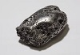

Så här går det till att smida i silver

Kan man laga vigselringar:
Om du vill göra egna smycken i silver hittar du såväl verktygen som materialet du behöver hos KarAna Ädelmetall. Det silver som du kan köpa från oss är av kvalitén 925 Sterling, d v s en legering som består av 92,5% silver och 7,5% andra metaller – företrädesvis koppar. Silvret finns som gjutsilver, plåt och tråd i olika tjocklekar. Plåtar och trådar köper du i färdiga mått eller hela meter, medan gjutsilver säljs gramvis.
Sedan mer än 5000 år tillbaka har man bearbetat silver. Sättet att smida, tänja och flytta metall med hammare som förnämsta verktyg är detsamma än i dag. Boken behandler två metoder inom silversmidet som benämns träckning och drivning. Metoderna kan närmast liknas vid att "tumma" och "dreja" fast inte i lera utan i metall. Arbetet kräver därför ett stor mått av tid och tålamod. Boken beskriver hur en bägare långsamt växer fram.
Så här går det till
Sedan mer än 5000 år tillbaka har man bearbetat silver. Sättet att smida, tänja och flytta metall med hammare som förnämsta verktyg är detsamma än i dag. Boken behandler två metoder inom silversmidet som benämns träckning och drivning. Metoderna kan närmast liknas vid att "tumma" och "dreja" fast inte i lera utan i metall. Arbetet kräver därför ett stor mått av tid och tålamod.